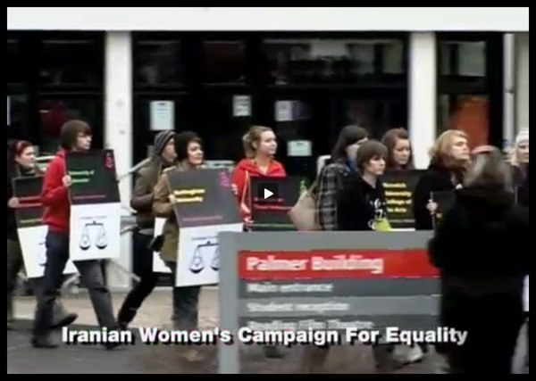
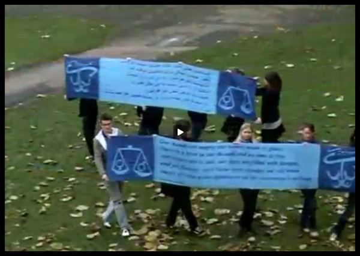
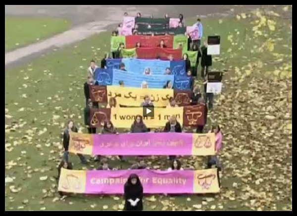

|
|
پیام دانشجویان عفو بین الملل در حمایت از فعالان کمپین یک میلیون امضا
چهار شنبه13 آذر 1387
تغییر برای برابری - روز گذشته دانشجویان امنستی (عفو بین الملل) ویدوئوی زیبایی را در حمایت از کمپین یک میلیون امضا در رسانه های اینترنتی جهان منتشرکردند.

این ویدئو همزمان با کنفرانس سالانه دانشجویان عفو بین الملل (2008) درحمایت از کمپین یک میلیون امضا در ایران بر صفحه وب سایت سازمان عفو بین الملل نقش بست. در این حرکت نمادین دانشجویان عفو بین الملل اعم از دختر
و پسر از کشورهای مختلف جهان با در دست گرفتن تصاویری از آرم کمپین یک میلیون امضا ونوشته هایی چون "وقتی بی عدالتی قانون می شود مبارزه وظیفه است" یا " یک زن = یک مرد " وتغییر برای برابری و...در یک راه پیمایی آرام حرکت می کنند و صدای سراینده کرد زبان آن این زیبایی را دو چندان کرده است.

همچنین هفته گذشته سایت تغییر برای برابری؛ رسانه کمپین یک میلیون امضا برنده جایزه ویِژه گزارشگران بدون مرز دویچه وله نیز شد. وجود چنین حمایت های خود جوش و مستقل جهانی درست همزمان با محدودیت های داخلی برای فعالین کمپین یک میلیون امضا شعف وشوری دوباره برای تغییر و برابری را در دل های کمپینی ها ایجاد کرد.

این ویدئو راببینید:
Amnesty Student Conference 2008: Action for the Iranian Women’s Campaign For Equality